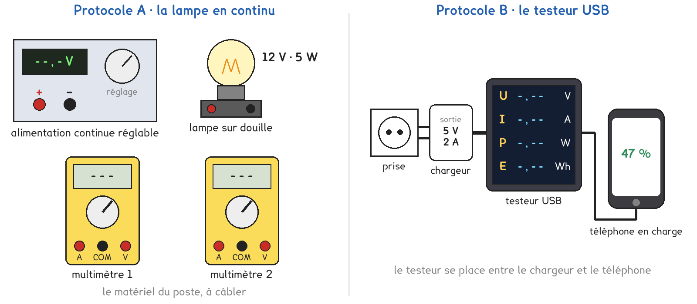

1re Bac Pro · toutes spécialités · TP commun CT-02
Quelle énergie un téléphone reçoit-il pendant une heure de charge ?
1 figure
Sujet. Chaque soir, on branche son téléphone. L’étiquette du chargeur annonce « 5 V · 2 A », et la charge dure environ une heure. Ce que le téléphone reçoit pendant ce temps finit sur la facture d’électricité.
Problématique : quelle énergie un téléphone reçoit-il pendant une heure de charge ?
Au laboratoire, deux façons de mesurer ce que reçoit un appareil alimenté en courant continu.

a) Relever les indications portées sur la lampe et sur le chargeur de la figure.
| La lampe | Le chargeur | |
|---|---|---|
| La tension indiquée, avec son unité | …………………… | …………………… |
| L’autre grandeur indiquée, avec son unité | …………………… | …………………… |
| Le nom de cette autre grandeur | puissance · intensité | puissance · intensité |
Ces indications sont les valeurs nominales : celles pour lesquelles l’appareil est prévu.
b) Compléter les conversions. La première est faite.
| 1 min | 10 min | 1 h | 1 Wh = 1 W × 1 h | 1 kWh |
|---|---|---|---|---|
| 60 s | ………… s | ………… s | ………… J | ………… Wh |
Deux protocoles répondent à la même question. Une partie de la classe prend A, l’autre prend B, et on compare à la fin.
Protocole A · la lampe en continu. Une lampe 12 V · 5 W sous tension continue réglable : un voltmètre mesure U, un ampèremètre mesure I. On compare U × I à la puissance marquée.
Protocole B · le testeur USB. Placé entre le chargeur et le téléphone, il affiche U, I, P et l’énergie E reçue. On vérifie que P = U × I, puis on relève E au bout de dix minutes.
c) Compléter le tableau pour comparer les deux protocoles.
| Protocole A | Protocole B | |
|---|---|---|
| L’appareil qui reçoit l’énergie | …………………………… | …………………………… |
| Ce qu’on lit sur les appareils | …………………………… | …………………………… |
| La puissance de référence | …………………………… | …………………………… |
On choisit avant de toucher au matériel ; le professeur peut imposer celui qui reste libre.
d) Quel protocole prenez-vous ? Justifier en une phrase.
Je prends le protocole ……… parce que ……………………………………………………………………
e) Hypothèse : quelle puissance reçoit un téléphone en charge ? Entourer.
environ 0,5 W · environ 5 W · environ 50 W · environ 500 W
Avant de commencer
Le montage A se câble alimentation éteinte et le professeur le vérifie avant d’allumer.
L’ampèremètre va sur la borne A, calibre le plus grand, toujours en série.
Jamais plus de 12 V sur la lampe. Allumée, elle brûle : on ne la touche pas.
Le chargeur va sur une prise en bon état. On le débranche par la fiche.
Le testeur contient un voltmètre et un ampèremètre, branchés comme dans le montage A.
f) Tous les binômes : schéma normalisé du montage A, avec les deux appareils.
Le schéma se dessine sur la feuille du TP.
g) Relever les cinq mesures et calculer U × I, arrondi au dixième.
| Mesure | 1 | 2 | 3 | 4 | 5 |
|---|---|---|---|---|---|
| Tension U (V) | |||||
| Intensité I (A) | |||||
| Produit U × I (W) | |||||
| P de référence (W) |
En A, la puissance de référence n’est connue qu’à 12 V, marquée sur la lampe. L’énergie reçue pendant une durée t se calcule par E = P × t.
h) Calculer l’énergie reçue en 10 min : la lampe sous 12 V, ou le téléphone.
E = ………… W × ………… s = ………… J, soit ………… Wh
En B seulement, l’énergie affichée par le testeur : E = ………… Wh
i) Le produit U × I est-il égal à la puissance de référence, à 5 % près ?
j) Un groupe qui a pris l’autre protocole arrive-t-il à la même relation ?
Si vous avez fait A, le professeur donne la puissance mesurée en B.
k) Calculer l’énergie reçue par le téléphone en une heure, en Wh puis en J.
E = ………… W × ………… h = ………… Wh, soit ………… J
l) Répondre à la problématique en deux phrases.
Ce que ce TP a établi, et qui vaut pour tout appareil alimenté en continu :
À RETENIR
La puissance reçue par un appareil vaut P = U × I.
P en watts (W), U en volts (V), I en ampères (A).
L’énergie reçue pendant une durée t vaut E = P × t.
E en joules (J) avec t en secondes ; E en wattheures (Wh) avec t en heures.
1 Wh = 3 600 J et 1 kWh = 1 000 Wh. La facture d’électricité compte en kilowattheures.
Une charge par jour pendant un an, à environ 8 Wh la charge, et le kilowattheure à 0,25 €. Sans calculer précisément, entourer le coût annuel.
environ 0,70 € · environ 7 € · environ 70 €
TP commun de physique-chimie, toutes spécialités. Le travail se fait sur la feuille du TP : cette page en est la version à l'écran, sans les lignes à remplir. Rien n'est enregistré.